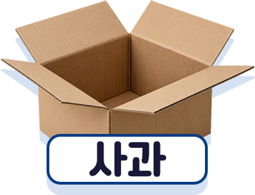
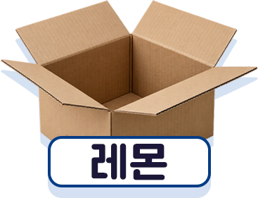
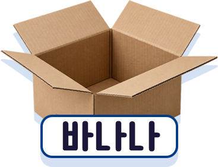
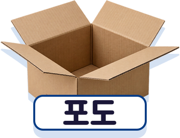
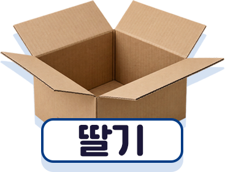

정말 잘했어요!
과일을 종류별로 완벽하게 정리했어요.
정리는 여러가지가 섞여 있는 것을 비슷한 것끼리 모으는 것을 의미해요.
게임에서 했던 정리와 수집을 AI도 똑같이 하고 있다는 사실, 알고 있었나요?
AI는 과일 대신 정보를 수집하고 정리해요. 우리가 일을 정확하게 해서 보상을 받았듯이, AI도 데이터가 잘 정리될수록 더 똑똑한 답을 할 수 있어요.
AI는 어떻게 일하는지,지금 만나러 가볼까요?